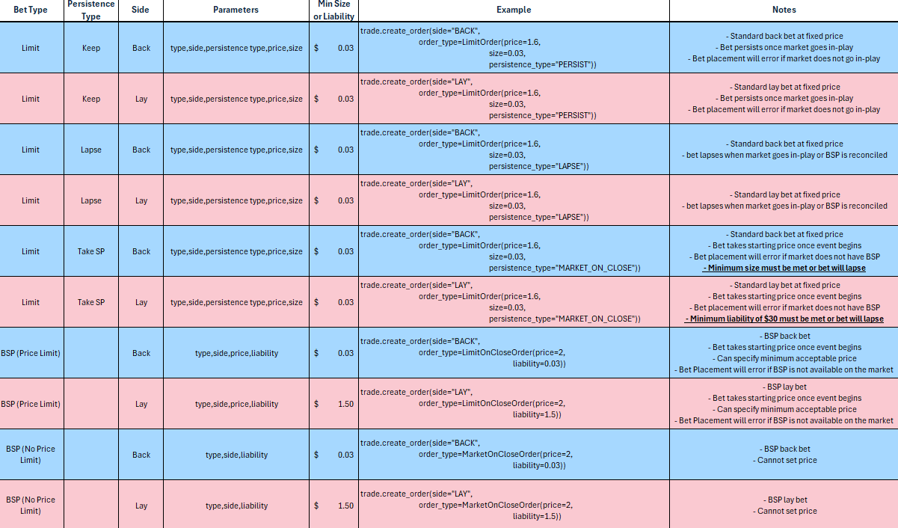

How To: Betfair Exchange
As Australias only online betting exchange, Betfair offers a real alternative to betting with a bookmaker. The platform provides a unique range of non-traditional betting methods that can help punters increase payout potential, uncover opportunities and minimise risk.
So how does Betfair work?
You know how traditional betting works? A licensed bookmaker puts up the odds and you take them. They accept your bet and pay out if you win.
Betfair is different. The Betfair Exchange connects you with punters all over the world to put up your own odds and place bets. With no interference from a bookmaker, the Betfair Exchange invites a real community to interact directly with the odds and control the market, meaning better odds and better value for you.
How does Betfair make money?
You might be wondering: if a bookmaker makes money by beating punters and claiming their losing stake, how does Betfair make theirs?
The answer is simple we take a small cut from the punters winnings instead.
Better known as commission, Betfair will charge a small percentage fee or Market Base Rate (or MBR) on all customer winnings. The MBR will vary depending on region or sporting code and is dictated by how much a sporting governing body taxes Betfair for allowing punters to bet on their product on the Betfair Exchange.
So while bookmakers attempt to make profit off losing punters, the Betfair Exchange encourages you to find an edge to win and win more! We dont care how good you are or the rate of money you make. Everyone is welcome to bet at Betfair. You can find out more about commission and other charges here
How do I place a bet?
There are two ways to bet at Betfair: you can either back the odds or you can lay them. To back the odds means you are betting that something will happen a traditional way to bet. By laying the odds you are doing the reverse: you bet that something will not happen and you want to be proven right.
To place your bet, go to your selected market and choose the odds available in either the blue (back) or pink (lay) boxes. Decide how much you want to bet and confirm.
But what if you dont like the odds you see? Ask for something better! Simply adjust the odds on your betting slip and place your bet. Your request will be submitted to the exchange platform, waiting for the Betfair community to decide if they will accept (or match) your offer.
Perhaps you are growing tired of being returned with unmatched bets? This is why we introduced the Betfair Starting Price (or Betfair SP). It guarantees that a punter will have their bet locked in at a fixed price, which is based on back and lay bets placed by the community on horse racing, greyhound racing and harness racing markets.
Back Betting
Placing a back bet is the standard play for all punters who used a bookmaker. So well keep this brief: in placing a back bet, you are betting on the odds of something to happen. To place your back bet, choose the market selection box in blue. The odds in the blue column are the biggest prices currently available to back in the market. (Those odds are in the selection box on top, while the amount currently available to back at those odds is underneath.)
When you have chosen a selection, the betting slip will appear. Time to outlay.
Youve chosen the best odds available, but maybe youre not satisfied? You can request even better odds following a few simple steps
- Toggle the odds on your betting slip to your desired price
- Enter your stake amount
- Place your bet to confirm. But be warned: your bet will be unmatched until another customer (the layer) agrees to your odds and staked amount. So dont go setting the odds of a $3.00 chance at $10.00 and expect to get matched instantly or at all!
Lay Betting
When you place a lay bet, you are betting on something not to happen. Before we dive into a market, lets walk you through the steps for placing a lay bet.
- Choose your market selection: just like if youre back betting but this time, pick the market selection box in pink. The odds here are the smallest price currently available to lay in the market.
- Take the odds available or set your own: again, you can adjust the odds box to an even shorter price. But remember: those odds will only be in locked in if another punter (the backer) matches them.
- Enter your stake: unlike a back bet, your stake is the money you want to profit from the predicted result (before commission plus any additional fees and charges). Its also called the backers stake because you essentially want to keep the money of someone whos wagering that the same result will happen. (This is the basic idea of bookmaking.) It is not, however, the full amount that will be deducted from your account when you place your lay bet. That number is your liability.
- Liability explained: this is the amount you could lose if the result does not fall your way. It is calculated as follows: Liability = [lay odds x backers stake] backers stake
If you wanted to lay the Sydney Swans in the AFL Premiership market at the odds of $8.00 and entered a $10.00 stake, that means there is someone else putting $10.00 on (backing) for the same result to happen at the same odds.
For the backer its $10.00 x $8.00 = $80.00 payout a $70.00 profit. And that backers profit becomes your liability.
- Place your bet: now you know what liability means, hit that place bet/s button and start the lay bet experience.
Why lay?
Consider the Melbourne Cup. Youve got 24 horses in the race. Theres only one winner. Finding that winner can be extremely hard when youre pouring over different form lines from different states, regions and hemispheres. How do you land on one good back bet?
Turn to a lay bet and youre essentially backing the other horses in the race to beat the one youre laying. On sheer head count alone (23 against one), the odds are stacked in your favour.
Similar logic works for sport. Lets say the odds for Jordan Spieth to win the Masters Tournament are too short, but you dont know who else to back. Place a lay bet on Spieth and you are backing any of his opponents to win instead. Sounds easier, right?
Just remember though: the bigger the odds for laying, the greater the liability you face. Know your odds and how to minimise risk. Bet wisely and bet with care.
Lay Betting = Trading the Odds
The chance to lay opens the door to betting opportunities you wont find with a traditional bookmaker. We will explore these in more detail later, but heres a quick snapshot
- Trading on racing and sport: lay something not to happen at lower odds, then back it at a higher price to secure a profit. Youre playing the betting game here and the result of the event becomes meaningless.
- Lay betting on racing in-play: consider yourself a form student? Find an edge through video form and more by laying lead horses you know have a weakness at the finish.
- Arbitrage betting: or arbing for short, where you back a selection with a traditional bookmaker, then lay the same selection on the exchange at odds which can secure a profit. Like trading, youre now letting the result just play out.
Persistence Types and Limit Bets
Limit bets on the Exchange are simple back and lay bets where a price limit has been set. This is the bet type created when you either back or lay a selection using the instructions above.
A persistence type is simply the behaviour of a bet if it is not matched when it is first placed. There are three types:
- Lapse: This is the default setting and means that when the event starts, any unmatched bets will automatically be cancelled
- Keep: This keeps unmatched bets alive when the market goes in-play. These can be cancelled at any time, but in Australia where in-play sports betting is restricted, they cannot be changed. For in-play racing betting on thoroughbreds and harness, these can be changed at any time. For markets that do not go in-play like Greyhounds, this persistence type is invalid
- Take SP/Market On Close: This causes unmatched bets to accept the BSP where the unmatched portion of the bet is greater than the minimum required bet. For bets smaller than this, they will lapse. For markets that don't support BSP, this persistence type is invalid. These bets cannot be cancelled and no odds limit can be specified.
Betfair Starting Price (BSP)
The Betfair Staring Price (BSP) is similar to the tote in that it allows you to take a fair price that's based on the backers and layers in the market.
How is BSP different to the traditional starting price?
Traditionally in Australia, the Starting Price for any horse in any race has been determined by the most common prevailing price available in the bookmakers ring at the meet in question. Betfairs Starting Price is different.
Its based on bets placed by both backers and layers in any market. At the start of an event it looks at the relationship between the amount of money requested at SP by opposing customers and any unmatched Exchange bets.
Theres no margin for profit built in and thats why we think it will give you much better value, even after taking account of commission paid on your net winnings.
Where can I bet on the BSP?
Australia All thoroughbred win markets and all place markets. All harness win markets and all place markets, except for NSW meetings and any meetings predominantly on Sky 2. Sky 2 meetings are win market only. All greyhound win markets and all place markets.
New Zealand All thoroughbred win markets. All greyhound win markets.
International All thoroughbred win markets across selected racing around the world.
How to place an SP bet?
- Outright BSP betting - you can place the full stake of your wager on the BSP, either regardless of the odds (this is a "market_on_close" bet) or you can specify an odds limit (the worst odds you are willing to accept). You can specify a minimum odds for a back bet and a maximum odds for a lay bet (this is a "limit_on_close" bet).
- Unmatched SP Betting - you can take a price at the Back or Lay odds and if your bet is partially matched, you are prompted to Take SP for the unmatched amount. By clicking Take SP and updating your bet, when the event turns in-play, any unmatched amounts will automatically be matched at the SP price. This also applies to bets that may be fully unmatched when the event turns in-play the SP provides convenience ensuring you get your stake matched. Note that this only applies to markets which support BSP betting
In-Play Betting
Fortune Favours Fast Fingers
Sport is the greatest theatre. It can bring a level of uncertainty and unpredictability you wont find anywhere else. Where the momentum swings like a pendulum, between heartbreak and glory, in a matter of seconds. Think of the ball that escaped Saints player Stephen Milne in the epic 2010 AFL Grand Final. Or the thunderous finish by Chautauqua in the 2017 T J Smith Stakes.
Moments like these have you wondering, what are the odds of that happening?
At Betfair, you can bet in-play on the outcome of a market as the event in question is happening in real time. That means, you couldve backed the The Draw to occur in the St Kilda v Collingwood Grand Final and Chautauqua to win at Randwick in the split-second that neither seemed possible. Conversely, you couldve layed South Africa to win the 1999 Cricket World Cup semi final against Australia in the final over.
There are racing and sports markets with in-play odds you might never find in a pre-play market. All you need is speed and determination!
A Note on In-Play Sports Betting
In 2015 the Federal Government prohibited Australian customers from betting online on any aspect of a sporting event after that event has begun. Therefore, customers cannot place bets in-play on sporting events via the Betfair App or on desktop. If customers wish to place an in-play bet on a sports market, they must call our telephone betting service on 132 BET (132 238).
There are two notable exceptions to this online customers can bet in-play on the AFL Brownlow Medal and politics markets.
Wait for the Green Light
In-play betting is no different to backing or laying on a market before the start time. Find the market youd like to wager on and wait for the in-play status to appear. A market is turned in-play at either the events start time or the scheduled start time, depending on the rules specific to the sport. Look out for the green tick above the market selections on desktop, while on the App a green In Play tag will appear next to the race number in question when betting is turned live.
You can place back or lay bets at odds ranging from $1.01 to $1000.00 in-play. Trust us: those prices get matched, and they have occurred before! Where there is a sporting collapse or victory snatched from the jaws of defeat, the big (and small) odds are getting matched on the Betfair Exchange.
Why Wait?
In-play betting provides an opportunity for punters to observe initial momentum and tactical arrangements of a race or sporting match before getting involved. The fast-paced nature of horse and harness racing appeals to punters looking for better odds and utilising their judgement of form and speed maps to claim unlikely sources of value.
For example, if you know a short-priced favourite is a backmarker who will finish strongly, you might find an opportunity to back at better odds in-play versus pre-play. It depends on the prevailing circumstances midrace, but it could lead to opportunities you will never find in relatively static pre-play markets.
While in-play sports betting is generally less volatile due to matches taking place over a longer period, punters may prefer it as they can weigh up their options with more confidence. It still can lend itself to abrupt changes in odds, which youll find in Twenty20 cricket, AFL or soccer, where a wicket or turnover can lead to major changes on the scoreboard, and markets will reflect those differing circumstances in a match.
A lesser known but key attraction of in-play betting is the opportunity for punters to combine back and lay bets in the pursuit of profit. With markets active right up to the final siren or winning post, punters can place multiple bets at any time on the same selection and improve their position.
Bet Type Summary
Here's a summary of the different bet-types you'll encounter on the Betfair Exchange. While all this talk about persistence types, limit bets, market_on_close and limit_on_close may seem confusing at first, it will all become clear in time.
